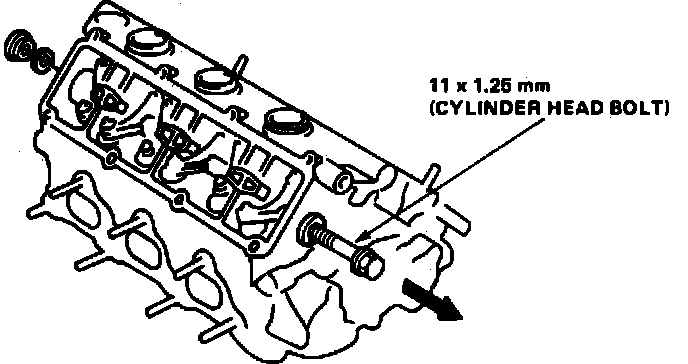
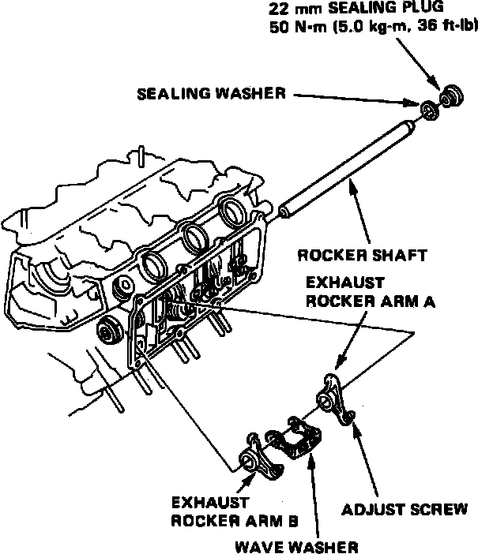
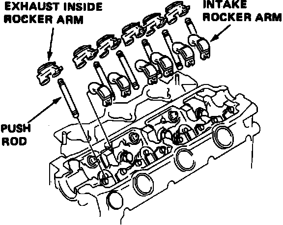
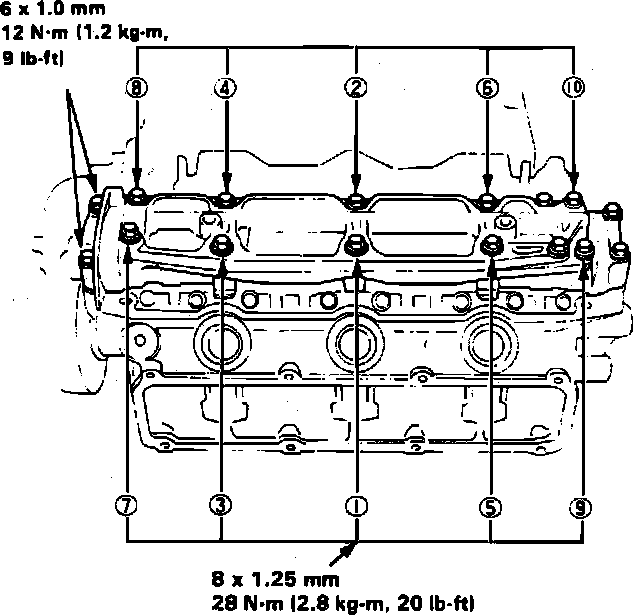

Rocker Arm Assembly: Service and Repair
Fig. 44 Exhaust Rocker Arm Shaft Removal:

Fig. 45 Exhaust Rocker Arm Installation:

Fig. 46 Exhaust Inside Rocker Arm & Intake Rocker Arm Installation:

Fig. 47 Camshaft Bearing Cap Bolt Tightening Sequence:

1. Remove cylinder head as outlined under CYLINDER HEAD.
2. Remove exhaust rocker arm assembly as follows:
a. Remove rocker shaft sealing bolt from transaxle side of cylinder head and install a long 12 x 1.25mm bolt to the rocker shaft.
b. Remove rocker shaft, rocker arms and wave washers using installed bolt, Fig. 44.
3. Install exhaust rocker arm assembly as follows:
a. Apply clean engine oil to rocker shaft mounting surfaces.
b. Tap rocker arm shaft into position from transaxle side, then install rocker arms and wave washers, Fig. 45. Ensure wave washers are fully seated in cylinder head groove.
c. Fully insert rocker shaft, then install sealing plug and torque to 36 ft. lbs. (33 ft. lbs on 2.7L engine).
4. If lifters were removed, pour engine oil into lifter bores up to level of oil path, then install lifters into cylinder head without rotating. Pour oil into oil filler holes in cylinder head.
5. Install pushrods, then the exhaust inside rocker arm and intake rocker arms, Fig. 46.
6. Install camshafts and camshaft oil seals, noting the following:
a. Ensure camshaft in front position has a groove for driving the distributor.
b. Ensure camshaft is positioned parallel with rocker arm slipper surface.
c. To prevent interference between piston and valve, advance crankshaft by 15° from TDC of compression stroke on cylinder No. 1.
d. Position camshaft in rear position on cylinder head so cam is not pushing the valve.
e. Position oil seals with spring side facing inward.
f. Do not lubricate cam holder side of oil seal.
7. Apply suitable sealant to oil seal mounting surface and on head contact surface, then install and temporarily tighten bearing caps.
8. Install camshaft oil seal until it contacts bearing cap, then torque attaching bolts to specifications in sequence, Fig. 47. Torque 6mm bolts last.
9. Install timing belt upper cover plate, then the camshaft pulleys.